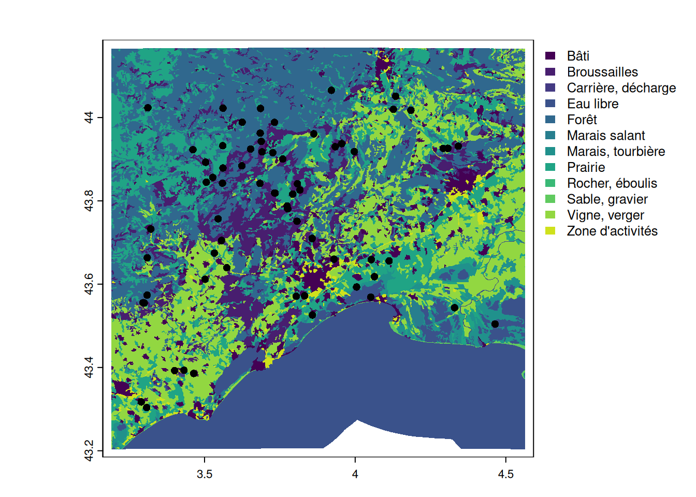
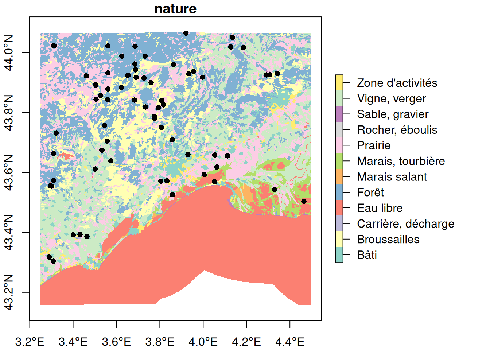
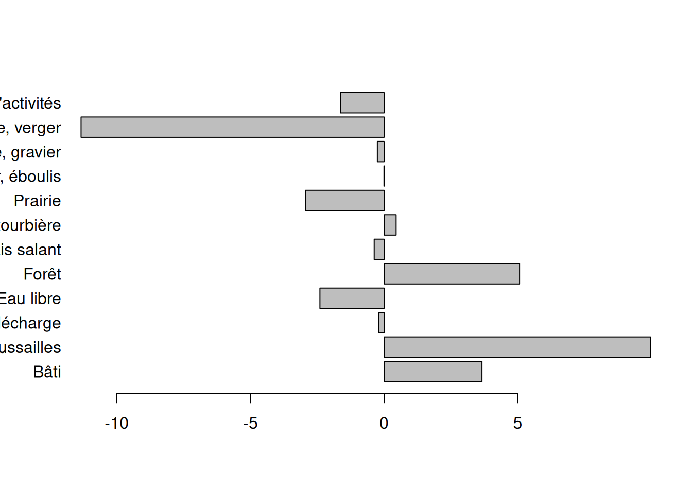
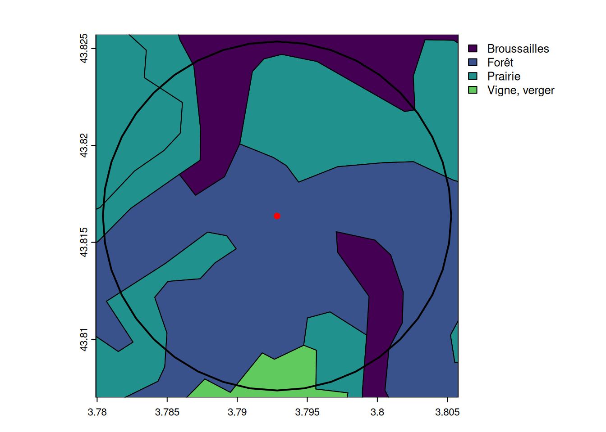
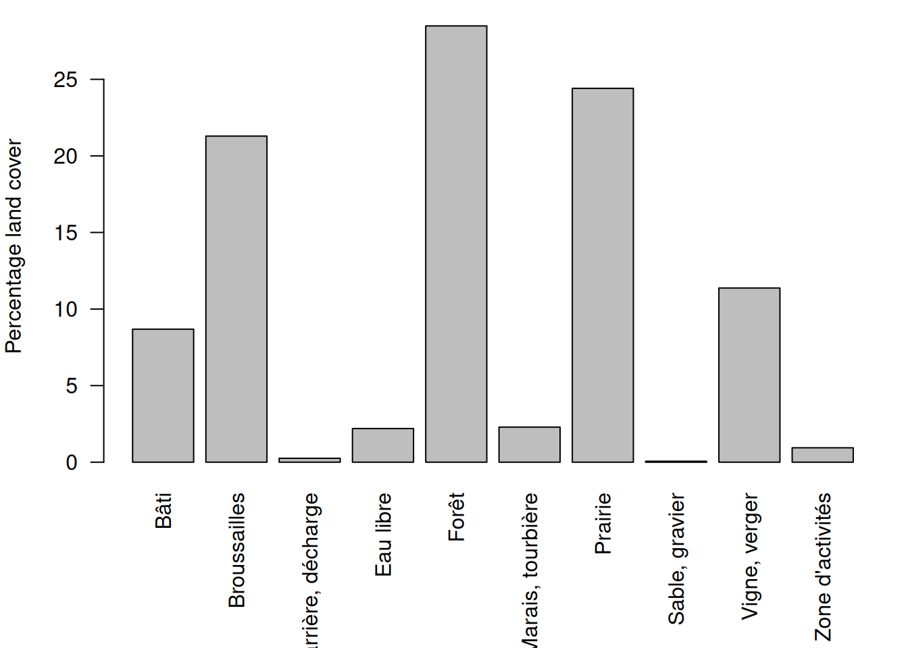

suppressPackageStartupMessages({
library(mapview)
library(here)
library(sf)
library(terra)
})Polygons
ImportantSummary
This tutorial explores how to handle spatial polygons in R with terra package:
- read a spatial object with
terra::vect()
- calculate the area of polygons with
terra::expanse()
- extract values of polygons to points with
terra::extract()
- create buffers around points with
terra::buffer()
- find intersection among two polygon layers with
terra::intersect()
TipThe ecologist mind
In which type of habitats were the otters observed? To answer this question, we will need to discover another type of spatial vector: polygons.
Setup
Follow the setup instructions if you haven’t followed the tutorial on points
If haven’t done it already, please follow the setup instructions. Let’s start with loading the required packages.
pt_otter <- vect(here("data", "gbif_otter_2021_mpl50km.gpkg"))pt_otter <- vect(
"https://github.com/FRBCesab/spatial-r/raw/main/data/gbif_otter_2021_mpl50km.gpkg"
)Load polygons from a shapefile
In this example, we will load land cover information for the area of interest from IGN data BD CARTO.
Note that this dataset has rough resolution (OSO or Corine land cover would be more suited for real analysis), but it’s perfect for our illustration and learning purposes.
You can load vector data with the function terra::vect().
landuse <- vect(here("data", "BDCARTO-LULC_mpl50km.shp"))landuse_sf <- st_read(here("data", "BDCARTO-LULC_mpl50km.shp"))Reading layer `BDCARTO-LULC_mpl50km' from data source
`/home/romain/GitHub/spatial-r/data/BDCARTO-LULC_mpl50km.shp'
using driver `ESRI Shapefile'
Simple feature collection with 2910 features and 3 fields
Geometry type: MULTIPOLYGON
Dimension: XY
Bounding box: xmin: 3.18983 ymin: 43.20373 xmax: 4.56447 ymax: 44.16754
Geodetic CRS: WGS 84If you don’t have the data locally (and won’t use it repeatedly), you can load it directly with:
landuse <- vect(
"https://github.com/FRBCesab/spatial-r/raw/refs/heads/main/data/BDCARTO-LULC_mpl50km.shp"
)
NoteYour turn
- How many different polygons are used in the land cover of our study area?
- What is the coordinate reference system (CRS) of the loaded river data?
- How many land cover classes are there? Which class has the most polygons?
Click to see the answer
- There was
2910polygons in the dataset. You can access it withdim(landuse),nrow(landuse)or just by typinglandusein the console.
- The coordinates are in
WGS 84(EPSG4326). You can access this information withcrs(landuse, describe = TRUE)(or insfwithst_crs(landuse_sf)). - The column that stored the cover classes is
nature. You could identify it withhead(landuse)ornames(landuse). There are12land cover classes,Prairieis the class with most polygons (table(landuse$nature)).
Visualization
Before comparing two spatial objects (the otters observations and the land cover), it is recommended to plot them and make sure their projection systems are the same and the extents match.
Do not use the package mapview because it will automatically project the datasets.
plot(landuse, y = "nature", border = NA)
plot(pt_otter, add = TRUE)
plot(landuse_sf["nature"], reset = FALSE, border = FALSE, axes = TRUE)
plot(pt_otter, add = TRUE, pch = 16)
Warning
When you want to overlay multiple spatial object with base plot from sf, don’t forget to use the argument reset=FALSE.
Calculate area
TipThe ecologist mind
What is the dominant land cover in our study area?
The function terra::expanse() calculates the area in \(m^2\). When calculating areas, be careful with projection systems. Some are not suited to calculate areas. Prefer equal-area projections or use local projection systems (if your study area is small).
Luckily, the package terra calculates by default the geodesic area (based on lat/long coordinates and considering Earth’s curvature) which is the most accurate estimate and avoid errors due to wrongly used projection system.
# calculate the area in ha
area_polygons <- expanse(landuse) * 0.0001
# store the area as atribute
landuse$area_ha <- as.numeric(area_polygons)In sf, it is recommended to project the dataset to a equal area projection, such as the Lambert azimuthal equal-area for Europe EPSG:3035.
# project land cover to an equal-area projection system
landuse_3035 <- st_transform(landuse_sf, crs = 3035)
# calculate area of polygons (in hectare)
area_polygons <- st_area(landuse_3035) * 0.0001
# store as attribute in landuse
landuse_3035$area_ha <- as.numeric(area_polygons)
NoteYour turn
- Which are the largest land cover classes in our study area? Why?
Click to see the answer
# see area per land use classes
area_landuse <- tapply(landuse$area_ha, landuse$nature, sum)
sort(area_landuse) Rocher, éboulis Carrière, décharge Sable, gravier Marais salant
37.78454 1916.22618 2353.14638 3455.79520
Zone d'activités Marais, tourbière Bâti Broussailles
15224.16350 29467.47117 55654.39730 97923.34835
Vigne, verger Prairie Eau libre Forêt
206514.68518 206833.73332 272561.76875 278134.18692 The categories Forêt (=forest) and Eau libre (=running water) are the largest land covers. As it can be seen in the previous map, large part of the Mediterranean Sea is included in the land cover data.
{kind=link}
Mask the sea
TipThe ecologist mind
Our study area was defined as a square buffer around Montpellier. This area include the Mediterranean Sea. It is recommended to mask the sea in order to consider only areas where otters could have been potentially spotted.
There are two approaches to mask an area: (1) identify which area to remove from the data itself, or (2) use a mask from another data source (this approach will be shown when dealing with rasters). In this case, it is easier and more accurate to detect directly from the data which polygons to remove. In fact, the largest polygon corresponds to the Mediterranean Sea. So we just need to remove it.
# the largest polygon correspond to the mediterranean
landuse$nature[which.max(landuse$area_ha)][1] "Eau libre"# remove the largest polygon
landuse_nomed <- landuse[-which.max(landuse$area_ha), ]
# visually verify the output
plot(landuse_nomed, y = "nature", border = NA)
Then we can recalculate the percentage of land cover per class.
cover_ha <- tapply(landuse_nomed$area_ha, landuse_nomed$nature, sum)
# percentage of land cover classes in the terrestrial study area
cover_perc <- cover_ha / sum(cover_ha) * 100
#show rounded values
round(cover_perc, 2) Bâti Broussailles Carrière, décharge Eau libre
5.98 10.52 0.21 3.61
Forêt Marais salant Marais, tourbière Prairie
29.87 0.37 3.16 22.21
Rocher, éboulis Sable, gravier Vigne, verger Zone d'activités
0.00 0.25 22.18 1.64 Polygons to points
TipThe ecologist mind
What is the land cover class at the location of the otters observations?
We can extract the land cover class of the points with terra::extract():
pt_landcover <- extract(landuse, pt_otter)We can extract the land cover class of the points with sf::st_join():
pt_landcover <- st_join(st_as_sf(pt_otter), landuse_sf)# see the number of observations per land use classes
table(pt_landcover$nature)
Bâti Broussailles Eau libre Forêt
8 17 1 29
Marais, tourbière Prairie Vigne, verger
3 16 9
NoteYour turn
- [stat] Which classes are over- or under- represented compare to the distribution of classes over the whole study area?
Click to see the answer
# calculate the percentage of otters observations per class
cover_obs_perc <- table(pt_landcover$nature) / nrow(pt_landcover) * 100
# match all classes with the one from the observations
m0 <- match(names(cover_perc), names(cover_obs_perc))
# create a data.frame
cover <- data.frame(
class = names(cover_perc),
all = as.numeric(cover_perc),
obs = as.numeric(cover_obs_perc[m0])
)
# non matchin elements = 0%
cover[is.na(cover)] <- 0
# calculate the difference between observed and expected
cover$delta <- cover$obs - cover$all
# add left margin to the plot
par(mar = c(4, 8, 4, 1))
barplot(
cover$delta,
horiz = TRUE,
names = cover$class,
las = 1,
xlab = "Difference between observed and expected cover (%)"
)
Polygons to polygons
TipThe ecologist mind
What is the land cover distribution around the locations of the otters observations?
To characterize the area surrounding the observations, we need to (!) create buffers, (2) calculate the intersection among the buffers and the land cover, and (3) calculate the area of the land cover classes intersecting the buffers.
Create buffer
We can create buffer with terra::buffer(). In our example, we will create buffers of 1km.
dist_buffer <- 1000 # buffer of 1000 m
poly_otter <- buffer(pt_otter, dist_buffer)
Warning
sf uses s2 when the coordinates are geographic (e.g. EPSG:4326) which creates buffers with low quality (in sf 1.0-21, tested on 03/11/2025).
It is recommended to use projected coordinates when using the function sf::st_buffer().
dist_buffer <- 1000 # buffer of 1000 m
# transform to an equal-area projection system: better for area
pt_otter_3035 <- st_as_sf(pt_otter) |> st_transform(3035)
poly_otter_3035 <- st_buffer(pt_otter_3035, dist_buffer)Visualize buffer
For illustration, we only show the buffer around the first observation.
The parameter ext limit the map to the extent of the given spatial object.
# plot the land cover limited to the extent of the buffer
plot(landuse, y = "nature", ext = poly_otter[1])
# add the buffer as a line of width 2
plot(poly_otter[1], lwd = 2, add = TRUE)
# add the observation as a red dot
plot(pt_otter[1], col = "red", add = TRUE)
NoteYour turn
- What are the areas of the newly created buffers?
Click to see the answer
# calculate the area of the buffers
buffer_area <- expanse(poly_otter)
# see the distribution of the buffer areas
summary(buffer_area) Min. 1st Qu. Median Mean 3rd Qu. Max.
3128689 3128689 3128689 3128689 3128689 3128689 # distribution of the buffer areas from sf
summary(st_area(poly_otter_3035)) Min. 1st Qu. Median Mean 3rd Qu. Max.
3140157 3140157 3140157 3140157 3140157 3140157 The difference with expected value of \(3141593\) is due to the way buffers are defined (by default, in 40 points in terra and 120 points in sf). If you want more precise buffers, you can change the parameter quadsegs from the terra::buffer() function. The roundness of the buffers is not important for most cases. It is much more important that all buffers have the same area.
Intersection among polygons
We can now intersect the buffers with the land cover information with the function terra::intersect().
buffer_landcover <- intersect(landuse, poly_otter)
# visualize the intersection
# not plotted here to lighten the webpage
# mapview(buffer_landcover, z = "nature")
# show a zoom on the land cover of the first buffer
plot(
buffer_landcover[buffer_landcover$key %in% poly_otter$key[1]],
y = "nature"
)
buffer_landcover_sf <- st_intersection(poly_otter_3035, landuse_3035)Warning: attribute variables are assumed to be spatially constant throughout
all geometries# visualize the intersection (not plotted to lighten the webpage)
# mapview(buffer_landcover, z = "nature")Land cover area per buffer
We need to update the area of the land cover intersecting the buffers.
# Calculate area for each polygon
buffer_landcover$area_ha <- expanse(buffer_landcover) * 0.0001
# Calculate area per buffer and nature class
class_area <- tapply(
buffer_landcover$area_ha,
list(buffer_landcover$key, buffer_landcover$nature),
sum
)
#replace NA by 0
class_area[is.na(class_area)] <- 0
# calculate the area of the buffer
sum_area <- rowSums(class_area)
# calculate the percentage per class
perc_class <- class_area / sum_area * 100
# add margin at the bottom
par(mar = c(7, 4, 1, 1))
barplot(apply(perc_class, 2, mean), las = 2, ylab = "Percentage land cover")